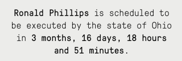
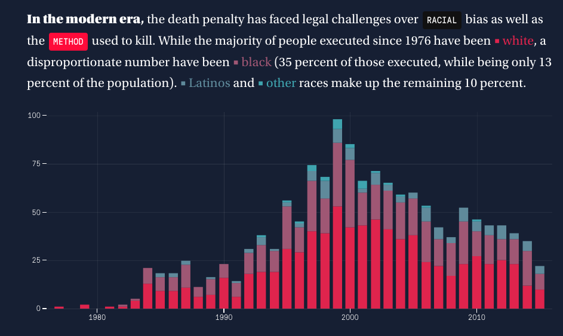
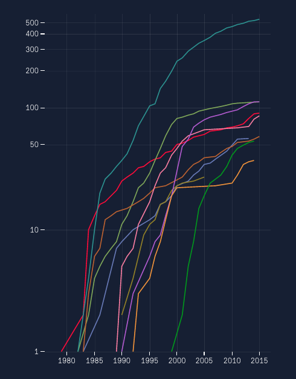
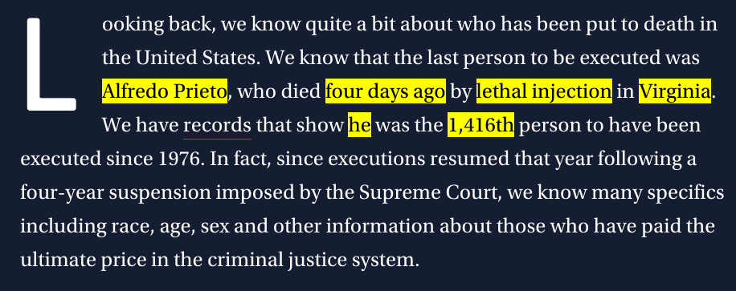
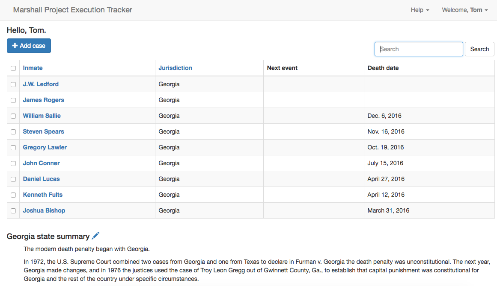
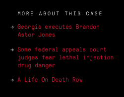
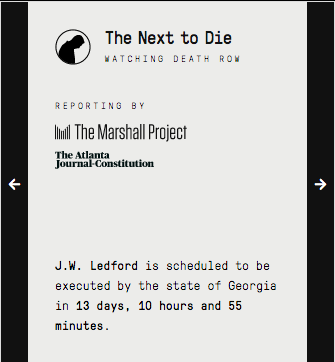

"When and where
is the next execution?"
Make it human without putting a face on it
Only humans recognize
the passage of time.

Changing bar charts with embedded keys

Smoothing out outliers

Rewriting the narrative

To do all this,
we needed reliable data
Make it easy to gather info
- Write 500-word summary of coming case
- Send a raven when status changes
Make it easy to contribute back

Offer something in return


Making partnerships work
- Have a single contact in a partner newsroom
- Serve as air traffic controller
- Make partners comfortable that your editorial values and standards are shared.